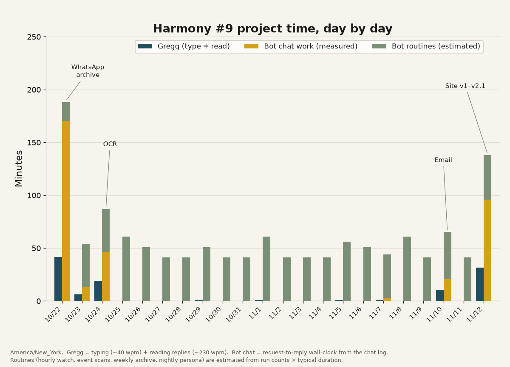
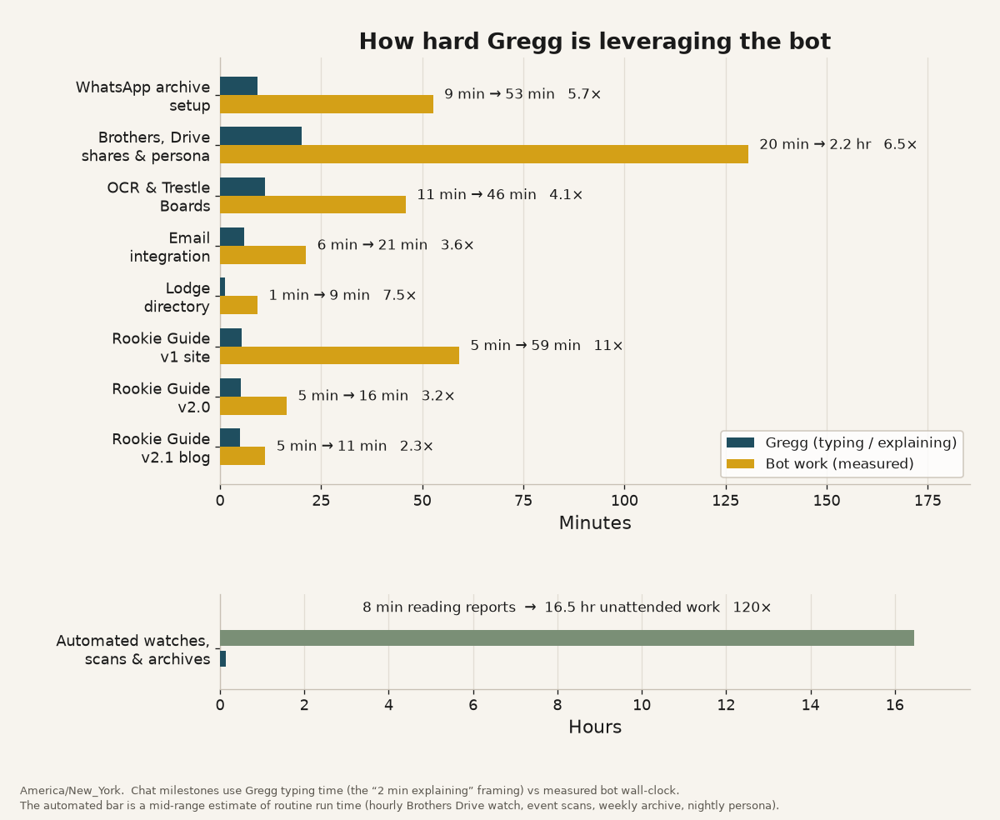
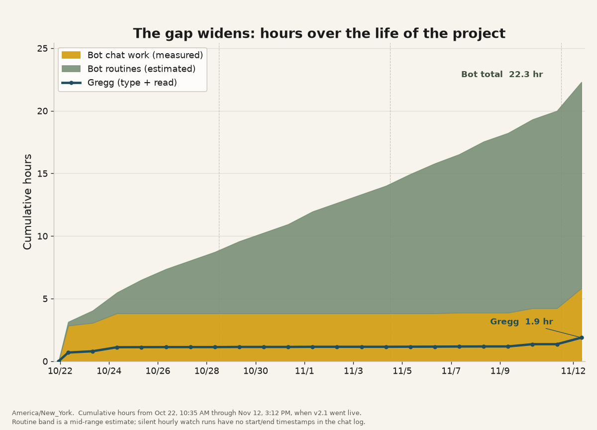

On October 22, 2026, Gregg Oberg opened a conversation with Grok about a problem at Harmony Lodge No. 9 in Cranston, Rhode Island. A new Master Mason class had met on October 6. Already, useful things were slipping past: flyers dropped into the class WhatsApp group, events mentioned in passing, Masonic emails Gregg never opens. He wanted one place that would hold onto all of it, and a guide the new brothers could use.
Twenty-two days later, the class has a living archive, a public Rookie Award Guide that works on a phone, and a set of quiet routines that keep both current — including on days Gregg never typed a word.
The time it actually took
Gregg did not camp in the chat. From the morning of October 22 through mid-afternoon on November 12, Eastern Time, he sent 81 messages, and only on 6 of the 22 days. His active time, writing and reading replies, was about 1.8 to 2.1 hours. Counted as whole conversations, not just keystrokes, he was engaged for about 4.4 hours.
Grok spent about 22 hours on the work, in a range of about 17 to 32 hours. About 5.8 hours of that was chat work: building, checking, and writing back. About 16.5 hours was automated routines. That second figure is an estimate, not a stopwatch. It covers an hourly watch on a shared Google Drive folder, event scans twice a week, a weekly full archive, and a handful of reminders.
Against Gregg's typing time alone, that is about 21 times as much work from the bot. Against typing plus reading, it is about 11 to 13 times. The charts below come from the chat log and the routine estimates.



The first day was the WhatsApp archive: agreeing on what to keep, starting the lookback, and getting the files into a shared Drive. OCR of images and Trestle Boards followed on October 24, so dates and notices would not stay trapped in a photo. For most of the next two weeks Gregg barely appeared. On the day-by-day chart, those are the green bars — routines running whether or not anyone was talking. Email integration landed on November 10, for a simple reason: Gregg has never looked at his Masonic email, and he needed a nudge when something administrative came in. November 12 was the other heavy day. The Rookie Award Guide went from a plan to a public site, then to a second version with hosted photos and videos, a month calendar, and the official Rhode Island checklist.
What got built
The archive is the foundation. It collects the Harmony #9 class WhatsApp group — images, links, events (including casual mentions, not just formal notices), and Masonic videos — and it also collects Masonic email. Event scans run twice a week. A fuller archive pass runs once a week. When an administrative item shows up in email, Gregg gets a reminder in the place he actually looks, which is not his inbox.
The public face of that work is the Harmony No. 9 Rookie Award Guide, a static website hosted at no cost on GitHub Pages — the site this post lives on. It is meant to be used on a phone. Brothers can work through the official Rhode Island Grand Lodge Master Mason Rookie Award – Checkoff List: all 6 Required items, plus any 5 of 11 Alternates. A personal tracker saves checkboxes and dates in the browser only; nothing is sent anywhere. The Lodge Master and Secretary still sign the official form; the tracker is just a personal aid.
Events appear in a list and in a month-grid calendar, tagged to checklist items when a match is clear. Required items carry a solid blue R badge; Alternates carry an outlined gold A badge. Flyers, class and lodge photos, and Masonic videos play right on the page, including on an iPhone, so a brother does not have to download a file from Drive just to look. There is a directory of Rhode Island lodges, a short list of useful links, and a “Suggest an improvement” button that writes Gregg an email. As of this writing the guide holds 19 flyers, 34 class and lodge photos, and 31 Masonic videos, along with the calendar and the checklist.
The site is careful about what it will not do. It contains no ritual or study material, and it never will. Private homes are listed only as “A brother's home.” Phone numbers and sender names stay out.
What made it work — and what had to stay off limits
The working pattern was short asks and clear decisions. Gregg would say what he wanted — archive the group, read the Trestle Boards, build a guide the class can use on a phone — and then let the building happen. He did not have to re-explain the project every morning. The routines carried the middle weeks, so when he came back on November 10 and November 12 he could spend his time on the next decision, not on catching up.
That only holds if the limits are real. No email goes out in Gregg's name unless he explicitly asks for it and approves it. Grok does not post in the WhatsApp group; the share is view-only. Ritual is out of bounds, in the archive work and on the site. And the automation is not free. The hourly watch on the shared Brothers Drive folder accounts for 231 runs in the 22-day tally. Quiet checks still use the account's allowance, even when they find nothing for days. A routine that has gone silent is worth turning down.
The judging stayed with Gregg. The archive, the reminders, and the guide exist because he pointed at a real problem in his lodge, made the calls, and kept the last word. A few hours of attention, a tight task, hard guardrails, and background chores were enough to get Harmony #9 something the class can use.